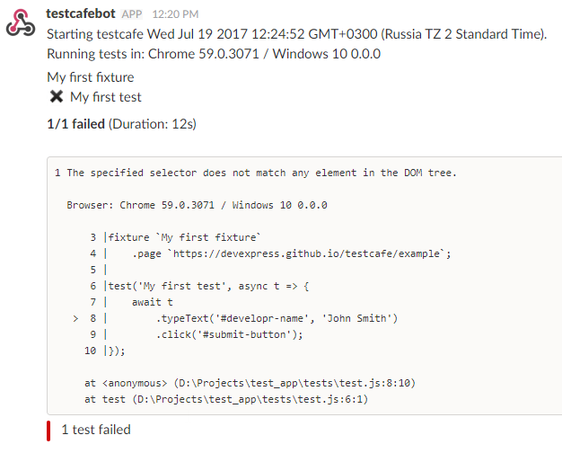
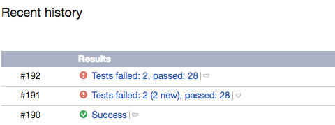

TestCafe v0.17.0 Released: Testing Electron Apps and Concurrent Test Execution
With this release, we have prepared a bunch of new features. Two big news are the Electron browser provider and concurrent test execution.
Read on to learn more.
Enhancements #
⚙ Testing Electron applications (testcafe-browser-provider-electron) #
We have created a browser provider that allows you to test Electron applications with TestCafe.
Getting it to work is simple. First, install the browser provider plugin from npm.
npm install testcafe-browser-provider-electron
We assume that you have a JavaScript application that you wish to run in Electron.
Create a .testcafe-electron-rc file that contains configurations for the Electron plugin.
The only required setting here is mainWindowUrl. It's a URL (or path) to the main window page relative to the application directory.
{
"mainWindowUrl": "./index.html"
}
Place this file into the application root directory.
At the next step, install the Electron module.
npm install electron@latest
Now you are ready to run tests. Specify the electron browser name and the application path
at the test launch.
testcafe "electron:/home/user/electron-app" "path/to/test/file.js"
testCafe
.createRunner()
.src('path/to/test/file.js')
.browsers('electron:/home/user/electron-app')
.run();
To learn more about the Electron browser provider, see the plugin readme.
⚙ Concurrent test execution (#1165) #
We've added concurrent test launch. This makes a test batch complete faster.
By default TestCafe launches one instance of each specified browser. Tests run one by one in each of them.
Enable concurrency and TestCafe will launch multiple instances of each browser. It will distribute the test batch among them. The tests will run in parallel.
To enable concurrency, add -cin the command line. Or use the runner.concurrency() API method.
Specify the number of instances to invoke for each browser.
testcafe -c 3 chrome tests/test.js
var testRunPromise = runner
.src('tests/test.js')
.browsers('chrome')
.concurrency(3)
.run();
For details, see Concurrent Test Execution.
⚙ Output test run reports to Slack and TeamCity (testcafe-reporter-slack, testcafe-reporter-teamcity) #
Thanks to @Shafied and @nirsky, TestCafe ecosystem has gained two new reporter plugins.
The Slack reporter allows you to create a chat bot that posts test run results to a Slack channel.

The TeamCity reporter enables you to display reports inside the TeamCity UI.

⚙ Further improvements in automatic waiting mechanism (#1521) #
We have enhanced the waiting mechanism behavior in certain scenarios where you still used to need wait actions.
Now automatic waiting is much smarter and chances that you need to wait manually are diminished.
⚙ User roles preserve the local storage (#1454) #
TestCafe now saves the local storage state when switching between roles. You get the same local storage content you left when you switch back.
This is useful for testing websites that perform authentication via local storage instead of cookies.
Bug Fixes #
- Selector's
withAttributemethod supports search by strict match (#1548) - Description for the
pathparameter of thet.takeScreenshotaction has been corrected (#1515) - Local storage is now cleaned appropriately after the test run.(#1546)
- TestCafe now checks element visibility with a timeout when the target element's
style.topis negative (#1185) - Fetching an absolute CORS URL now works correctly. (#1629)
- Add partial support for proxying live node collections (the
GetElementsByTagNamemethod) (#1442) - TypeScript performance has been enhanced. (#1591)
- The right port is now applied to a cross-domain iframe location after redirect. (testcafe-hammerhead/#1191)
- All internal properties are marked as non-enumerable. (testcafe-hammerhead/#1182)
- Support proxying pages with defined referrer policy. (testcafe-hammerhead/#1195)
- WebWorker content is now correctly proxied in FireFox 54. (testcafe-hammerhead/#1216)
- Code instrumentation for the
document.activeElementproperty works properly if it isnull. (testcafe-hammerhead/#1226) length,itemandnamedItemare no longer own properties ofLiveNodeListWrapper. (testcafe-hammerhead/#1222)- The
scopeoption in theserviceWorker.registerfunction is now processed correctly. (testcafe-hammerhead/#1233) - Promises from a fetch request are now processed correctly. (testcafe-hammerhead/#1234)
- Fix transpiling for the
for..ofloop to support browsers withoutwindow.Iterator. (testcafe-hammerhead/#1231)